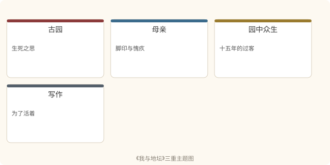

我与地坛
一、基本信息
| 作者 | 史铁生 |
|---|---|
| 成书/出版 | 1991年发表（英文维基：I and the Temple of Earth (我与地坛, 1991)） Shi Tiesheng — Wikipedia (EN)（百科全书） |
| 国别/地区 | 中国 |
| 时代 | 现当代 · 当代 |
| 体裁 | 散文 |
| 语言 | 汉语（白话） |

《我与地坛》三重主题图（主题·结构图）
二、创作背景
China Daily 转述（见英文维基）：Many critics have considered I and the Temple of Earth as one of the best Chinese prose essays of the 20th century（许多评论者视《我与地坛》为20世纪最好的汉语散文之一）。
背景：作者1972年21岁双腿瘫痪（英文维基），此后十五年间摇着轮椅进出地坛。
三、内容脉络
古园（地坛）中关于生死的长考：『死是一件不必急于求成的事』（名句通说待核）。
母亲线：『这园中不单是处处都有过我的车辙，有过我的车辙的地方也都有过母亲的脚印』（名句通说待核）。
园中众生：十五年坚持跑步的长跑家、弱智少女与她的哥哥等（通说）。
四、主要人物表
| 人物 | 身份 | 说明 |
|---|---|---|
| 我 | 残障作家 | 摇轮椅的沉思者 |
| 母亲 | 隐忍的母亲 | 第二主题（通说） |
五、主题与艺术特点
- 生死观：向死而生的安顿（通说）。
- 母爱与愧疚：『儿子的不幸在母亲那儿总是要加倍的』（名句通说待核）。
- 苦难与写作：写作为了活着（通说）。
六、影响与评论
- 英文维基：入选教材、被广泛译介并改编舞台；评论界视为20世纪最佳汉语散文之一（China Daily 转述）。
Shi Tiesheng — Wikipedia (EN)（百科全书） - 英文维基：史铁生去世后在21世纪年轻读者中经历显著的再流行（a significant resurgence in popularity, particularly among young readers）。
Shi Tiesheng — Wikipedia (EN)（百科全书）
七、阅读建议
难点
- 哲思密度——慢读。
- 地坛的空间与四季意象体系。
- 《我与地坛》（人民文学出版社单行本，通说待核）。
先读第一、二节 → 全文 → 对照《病隙碎笔》。
八、待核实
- 首发刊物（《上海文学》1991年第1期说）待核。
- 名句原文逐字核对。
- 全文七节结构（通说）待核。
本页主要来源
史铁生的其他收录作品：我与地坛